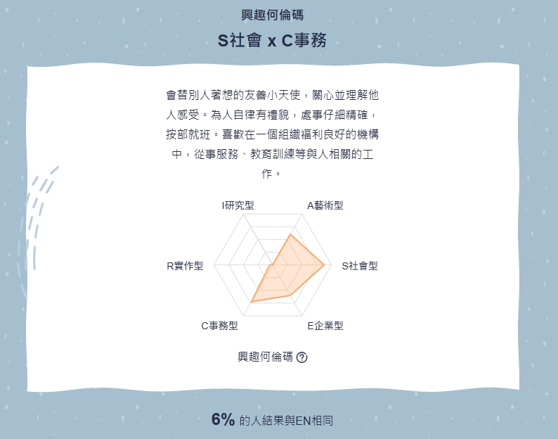
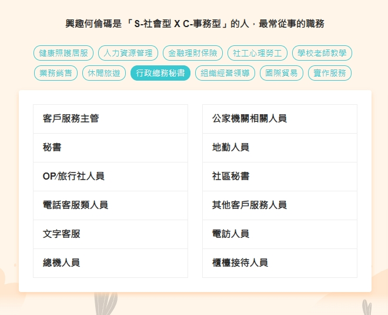
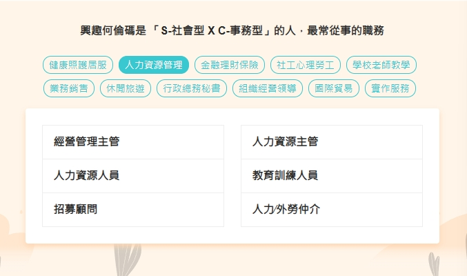
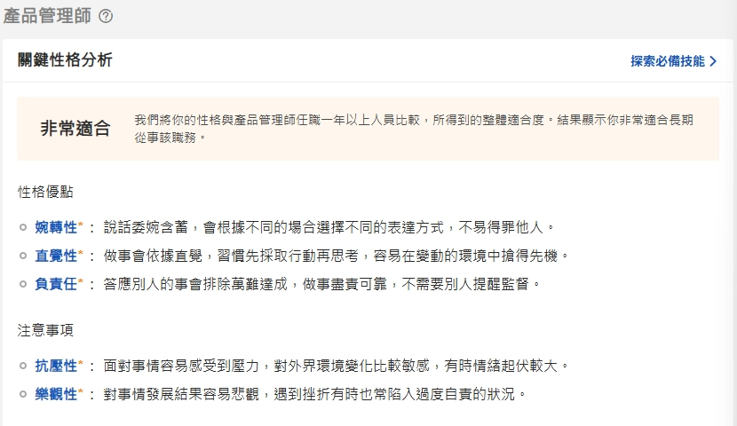
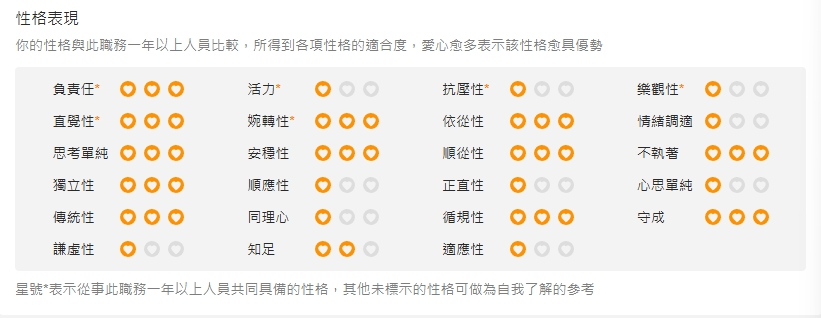
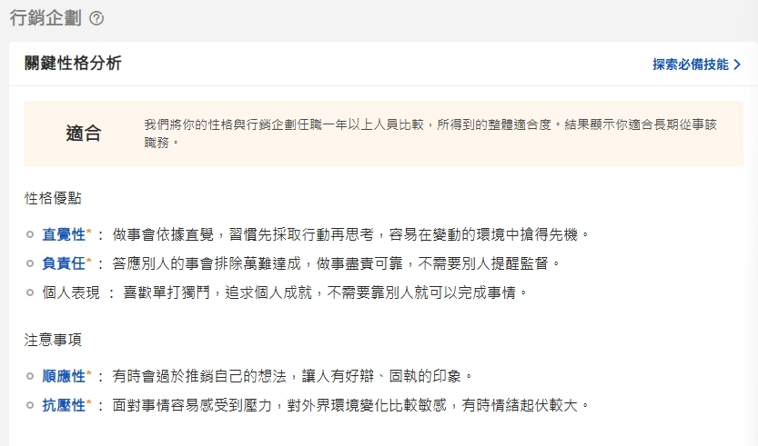
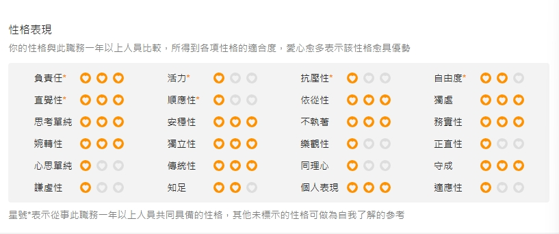

相關資料
姓名:徐梓恩
科系:行銷數位經營系
E-Mail:s1092075@gm.pu.edu.tw
畢業高中:明道高中商管群畢業
高中考取檢定證照
電腦軟體應用—丙級
電腦軟體應用—乙級
會計事務-人工記帳
會計事務-資訊
門市服務
POWERPOINT
EXCEL
PVQC
Holland檢測結果
S社會 X C事務
S社會型:
容易相處，他們關心自己和別人的感受，喜歡傾聽和了解別人，願意付出時間和精力去解決別人的衝突，喜歡教導別人。
C事務型:
會替他人設想，在乎別人的感受，和朋友關係良好但較少主動與人攀談；講求規矩精確，條理分明，行事仔細，會替自己安排一個清楚的工作順序。
測驗連結:https://reurl.cc/r0Zpk4

適合的工作類型

|

|
職業適性測驗結果
職業心理測驗係透過標準化工具，客觀評量個人與職業有關的變項，包含生涯探索、生涯選擇、學習規劃、訓練規劃至生涯適應等特質，以協助職業選擇、轉業及工作適應，獲得適性發展及規劃職業生涯。
測驗連結:https://reurl.cc/lpZ8lY
適合職業
—產品管理師

|

|
適合職業
—行銷企劃

|

|
符合&有興趣的相關工作
工作的內容&說明